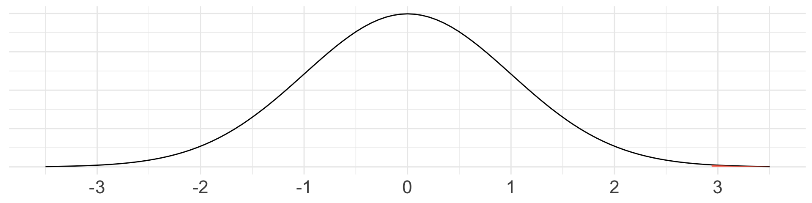
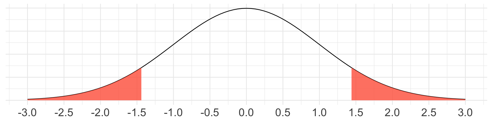

2025-10-30
Start off with a sample of size \(n\). Assuming independent observations,
CLT for sample means
Assume population with mean \(\mu\) and standard deviation \(\sigma\). If normality condition met: \[ \bar{X} \sim N\left(\mu, \frac{\sigma}{\sqrt{n}}\right) \quad \text{or} \quad \bar{X} \overset{\cdot}{\sim} N\left(\mu, \frac{\sigma}{\sqrt{n}}\right) \]
Normality condition
CLT for sample proportions
Assume population proportion \(p\). If success-failure condition met: \[ \hat{p} \overset{\cdot}{\sim} N\left (p, \sqrt{\frac{p(1-p)}{n}}\right) \]
Now we’re returning to hypothesis testing!
Two sets of hypotheses (competing claims)
Collect data, calculate a statistic from the observed data, set significance level
Obtain p-value from the null distribution
Make a decision
We learned how to conduct hypothesis tests (HTs) using simulation to obtain null distribution
But we can also use CLT to obtain null distribution!
So the only step that will “look different” is #3: how we obtain our null distribution and p-value
If you’d like supplemental reading about CLT-based inference for one proportion, Section 16.2 of the textbook can be helpful!
Want to conduct a hypothesis test about a population proportion.
\(H_{0}: p = p_{0}\)
\(H_{A}: p \neq p_{0}\) (or \(H_{A}: p > p_{0}\) or \(H_{A}: p < p_{0}\))
Remember, \(p_{0}\) is our “null hypothesized value”
Obtain observed sample proportion \(\hat{p}_{obs}\)
Set \(\alpha\) significance level
Recall CLT for sample proportion: if we have \(n\) independent binary observations that satisfy the success-failure condition, then
\[ \hat{p} \overset{\cdot}{\sim} N\left(p, \sqrt{\frac{p(1-p)}{n}} \right) \]
This is the sampling distribution of \(\hat{p}\)
But we want the null distribution of \(\hat{p}\): the sampling distribution under \(H_{0}\)
We should operate in a world where \(H_{0}\) is true
So to use CLT for null distribution, we must satisfy:
Independence (like usual)
Success-failure condition under \(H_{0}\): \(np_{0} \geq 10\) and \(n(1-p_{0}) \geq 10\)
If 1) \(H_{0}\) true and 2) success-failure (under \(H_{0}\)) and independence conditions are met, then CLT tells us our null distribution is:
\[ \hat{p} \overset{\cdot}{\sim} N\left(p_{0}, \sqrt{\frac{p_{0} (1-p_{0})}{n}} \right) \]
This is how the sample proportion would behave assuming \(H_{0}\) is true!
Will obtain p-value using a test statistic: a quantity that assesses how consistent our sampled data are with \(H_{0}\)
\[\frac{\text{point estimate} - \text{null value}}{\text{SE}_{0}}\] where \(\text{SE}_{0}\) represents the standard error under \(H_{0}\)
\[z =\frac{\hat{p}_{\text{obs}} - p_{0}}{\sqrt{\frac{p_{0} (1-p_{0})}{n}}}\]
Remember, \(z\) here is our test statistic. Is large \(|z|\) or small \(|z|\) considered unusual for \(H_{0}\)?
If \(|z|\) large, then that usually means observed value is extremely unusual for \(H_{0}\), which is convincing evidence against \(H_{0}\)
p-value is then \(\text{Pr}(Z \geq z)\) or \(\text{Pr}(Z \leq z)\) (or both), depending on \(H_{A}\)
pnorm() : either pnorm(z, 0, 1) and/or 1 - pnorm(z, 0, 1)Step 4: doesn’t change!
Some people claim that they can tell the difference between a diet soda and a regular soda in the first sip. A researcher wanted to test this claim using a hypothesis test at the 0.05 significance level.
Let \(p\) be the proportion of people who correctly identify soda type.
Try defining \(H_{0}\) and \(H_{A}\).
Define hypotheses
\(H_{0}\): \(p = 0.5\) (random guessing)
\(H_{A}\): \(p > 0.5\) (better than random guessing)
Note: \(p_{0} = 0.5\) is our null hypothesized value!
Collect data
Obtain null distribution and p-value
Check conditions for inference satisfied
Independence: random sample
Success-failure (under \(H_{0}\)): \(np_{0} = 80(0.5) = 40 \geq 10\) and \(n(1-p_{0}) = 40 \geq 10\)
Because conditions for CLT are met, we can obtain the null distribution using CLT.
Null distribution
\[\hat{p} \overset{\cdot}{\sim} N\left(0.5, \sqrt{\frac{0.5(1-0.5)}{80}} = 0.056 \right)\]
Test statistic:
\[z = \frac{\hat{p}_{obs} - p_{0}}{\text{SE}_{0}} = \frac{0.6625 - 0.5}{0.056} = 2.90\]
This means that if \(H_{0}\) true, our observed \(\hat{p}_{obs}\) is 2.90 SDs above the mean
Does this seem like “convincing evidence”?
Calculate p-value (i.e. draw picture, set-up the calculation, and/or write code)

Decision and conclusion
M&M’s reported that 14% of its candies are yellow. We are interested in testing this claim. In a random sample of 100 M&M’s, 9 were found to be yellow. Conduct a hypothesis test via CLT at the \(0.10\) level.
Write out null and alternative hypotheses in statistical notation (don’t forget to define quantities)
Summarise data and set \(\alpha\)
Verify conditions for CLT are met
\(H_{0}: p = 0.14\) vs \(H_{A}: p \neq 0.14\), where \(p =\) true proportion of yellow M&M’s
\(\hat{p}_{obs} = \frac{9}{100} = 0.09\)
\(\alpha = 0.10\)
Independence? Yes, via random sample
Success-failure: Yes: \(np_{0} = 100(0.14) = 14 \geq 10\) and \(n(1-p_{0}) = 86 \geq 10\)
Because conditions for CLT are met, we can obtain the null distribution using CLT.
By CLT, our null distribution is \(\hat{p} \overset{\cdot}{\sim} N\left(0.14, \sqrt{\frac{0.14(1-0.14)}{100}} = 0.035 \right)\)
Test statistic:
\[z = \frac{\hat{p}_{obs} - p_{0}}{\text{SE}_{0}} = \frac{0.09 - 0.14}{0.035} = -1.43\]

Make a decision and conclusion in context.
Since our p-value of 0.153 is greater than our significance level of 0.10, we fail to reject \(H_{0}\).
The data do not provide strong enough evidence to suggest that the true proportion of yellow M&Ms is different from 14%.
Why/how do the CLT conditions and/or statements change when obtaining:
Sampling distribution of \(\hat{p}\)
Null distribution of \(\hat{p}\)